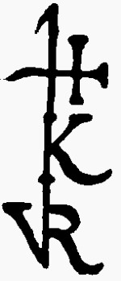

Killiaen Van Rensselaer
 Killiaen Van Rensselaer was the Dutch entrepreneur who secured the grant for the Manor of Rensselaerswyck and who was the driving force in its settlement until his death in 1642 or '43.
While acknowledging his primal influence, because he died prior to Albany's founding, never came to America, and never lived in the city of Albany, we must leave the focused study of his life to others.
However, four of his sons including domine Nicholas and the young Richard) from his second marriage to Anna Wely emigrated to America and played prominent roles in the settlement of Albany and its environs. His descendants in America are the progeny of his son Jeremias.
At least four individuals named "Kiliaen Van Rensselaer" actually lived in the city of Albany during its formative years. However, by definition, we will have the least to say about this most important Van Rensselaer.
The following biographical links should get you started:
Wikipedia article - most comprehensive and connected and recently revised!
Sketch from the New Netherland Institute.
Walter Gilbert genealogy
Van Rensselaer-Bowier Manuscripts
He needs a modern, English-language biography!
Jan Baptiste Van Rensselaer (b. 1629): At this time, we are uncertain as to whether we will present a sketch of this eldest son.